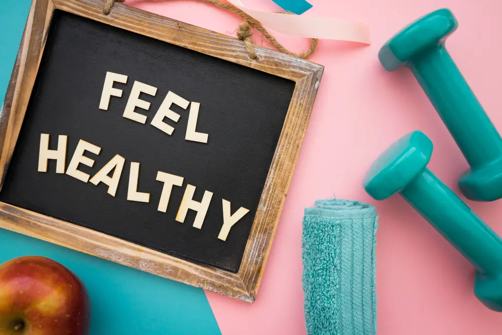

Hormone Wellness Center: The Secret to Feeling Like Yourself Again | HOOT HRT San Antonio TX
Ever looked in the mirror and thought, “Hmm, something feels off”? You’re eating right, sleeping (sort of), and maybe even hitting the gym once in a while, but somehow, you just don’t feel like you. That’s where the magic of a hormone wellness center like HOOT HRT in San Antonio, Texas, steps in.
At HOOT HRT, it’s all about helping your body find its natural rhythm again. The team specializes in Hormone Replacement Therapy (HRT) and weight loss programs that actually make sense for real people — not just fitness models or celebrities with private chefs.
So, what exactly is a hormone wellness center? Simply put, it’s a place where science meets self-care. These centers focus on balancing your hormones — the little messengers in your body that control almost everything from mood and energy to sleep, metabolism, and even your love life. When your hormones fall out of balance, everything feels off. But when they’re in check, you feel energized, focused, and more like yourself again.
Why Hormone Balance Matters More Than You Think
You may not realize it, but hormones are running the show in your body. They’re like the behind-the-scenes crew in a movie — not always seen, but definitely in charge of the action. From how well you sleep to how fast you burn calories, these chemical messengers control a lot more than most people think.
When hormones are unbalanced, life feels a bit like trying to drive a car with one flat tire. You’re still moving, but not smoothly. You might feel tired all day, find it hard to focus, gain weight even though you haven’t changed your diet, or feel moody for no reason.
That’s why hormone wellness centers are becoming such a big deal. They don’t just treat symptoms; they look for the cause. At HOOT HRT, the team uses a science-based approach to help identify what’s causing those mood swings or that stubborn belly fat that refuses to leave. They believe you shouldn’t have to accept fatigue, low energy, or poor sleep as part of getting older.
Meet HOOT HRT — San Antonio’s Trusted Hormone Wellness Experts
Located at 13423 Blanco Rd, Unit 3048, San Antonio, TX 78216, HOOT HRT has built its reputation on one clear goal — helping people feel better, look better, and live better through hormone balance and healthy weight management.
They’re not just about quick fixes or trendy diets. Instead, they focus on long-term wellness. The staff at HOOT HRT listens — really listens — to your concerns. They don’t rush you out the door with a prescription you barely understand. Instead, they take time to explain what’s happening inside your body and how hormones are connected to everything you’re feeling.
How Hormone Replacement Therapy Works
Hormone Replacement Therapy isn’t a new concept, but it’s become more precise and effective thanks to modern medicine. Think of it as giving your body the little boost it needs to restore balance.
At HOOT HRT, the process starts with a detailed consultation and lab testing. These tests check your hormone levels — including testosterone, estrogen, thyroid hormones, and more — to figure out what’s missing or overactive. Once your results are in, the team customizes a plan designed just for you.
The treatment might include bioidentical hormones, which are designed to match the hormones your body naturally produces. The results? Better mood, sharper focus, increased energy, improved metabolism, and yes — a more confident version of yourself.
The Connection Between Hormones and Weight Loss
Here’s something most people don’t realize — losing weight isn’t just about diet and exercise. Hormones play a huge role in how your body stores and burns fat. If your hormones are off, no amount of treadmill time or kale smoothies will give you the results you want.
At HOOT HRT, the team understands that stubborn weight gain is often linked to hormonal imbalances. When your thyroid, cortisol, insulin, or estrogen levels are out of balance, your metabolism slows down, and your body starts holding on to fat like it’s preparing for hibernation.
Their weight loss programs combine hormone balancing with realistic lifestyle guidance. They help you reset your metabolism so your body starts working with you instead of against you. It’s not about starving yourself — it’s about helping your body find its natural rhythm again.
What Makes HOOT HRT Different
You’ve probably seen countless ads for hormone clinics and weight loss centers, each claiming to be the best. But HOOT HRT truly stands out — and not because of fancy slogans or flashy marketing. They stand out because they care.
Every treatment plan is customized. Whether it’s testosterone therapy, thyroid optimization, or balancing estrogen levels, everything is carefully adjusted based on your test results and lifestyle.
Their focus isn’t just on physical changes but also emotional wellness. Hormone balance isn’t just about numbers — it’s about how you feel each day. That’s why patients often describe the team at HOOT HRT as caring, professional, and genuinely passionate about helping others.
Real People, Real Results
The results people get at HOOT HRT speak louder than any advertisement. Patients often say they feel like they’ve gotten their life back. They report higher energy levels, better sleep, and even improved relationships — because let’s face it, being tired and cranky all the time doesn’t exactly make you fun to be around.
Whether it’s improved mood, better workouts, or clearer thinking, the changes might be gradual, but they’re steady and real. It’s about balance — not perfection.
The Science Behind Feeling Great
What makes hormone therapy work so well is that it addresses the root cause of your symptoms instead of just masking them. When your hormones are balanced, your body functions more smoothly.
At HOOT HRT, they take this science seriously. They don’t guess. They use accurate testing and medical expertise to create a treatment plan that works for you — safely and effectively.
A Fresh Take on Aging Gracefully
Aging is natural, but feeling old is optional. That’s one of the key beliefs at HOOT HRT. They help people rediscover vitality at any age. Hormone balance helps smooth out the bumps that come with age — low energy, slower metabolism, or restless nights.
You start to feel young again, not because of magic, but because your body finally gets what it’s been missing.
Why San Antonio Trusts HOOT HRT
In a city full of healthcare providers, HOOT HRT has become a trusted name for a reason. The team is known for combining professionalism with a personal touch. They don’t treat you like a number — they treat you like a human being.
Their reputation has spread through word of mouth, and it’s easy to see why. When people feel genuinely better, they can’t help but share it. It’s not uncommon for friends or couples to come in together after seeing one person’s results.
The HOOT HRT Promise
The promise at HOOT HRT is simple — to help you feel like yourself again. Their approach is based on real science, honest communication, and genuine care. They’ll guide you through every step, from consultation to ongoing care, ensuring your treatment stays effective and comfortable.
How to Get Started
Getting started with HOOT HRT is easier than you might think. Just visit their website at hoothrt or stop by their location in San Antonio. Whether you’re curious about hormone therapy, struggling with weight loss, or just tired of feeling off, this might be the step that changes everything.
Final Thoughts
Feeling great isn’t about chasing perfection; it’s about balance. And that’s exactly what a hormone wellness center like HOOT HRT helps you achieve. When your hormones are balanced, life feels easier. You sleep better, move better, and smile more.
If you’re in San Antonio and looking for a trustworthy place that understands how hormones affect every part of your life, HOOT HRT might just be your new favorite wellness partner.